Chapter 10 Managing Field Trials
To view trial details on the database, click on the “Field Trials” link under the “manage” menu on the toolbar.

Clicking on the “Field Trials” link will bring you to the “Manage Trials” page. On this page, trials are organized according to their breeding programs. To access trial details, click on the + icon next to your breeding program.

Trials can be placed directly in their breeding program. Alternatively, they can be organized by using folders within each breeding program. Clicking on trial name will take you directly to the trial details page.

10.1 Trial Detail Page
Trial detail page displays important information about individual trial including breeding program, location, year, description of the trial, design, and any files associated with that trial.
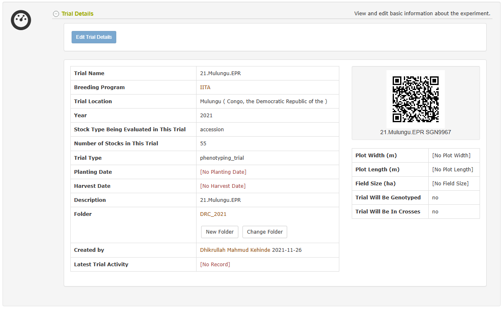
The “Navigator” section on the trial detail page allows easy access to all aspects of your trial. This section contains subsections for printing labels for your plots or plants, recording phenotypes, viewing your trial layout or design, viewing phenotypes for this trial, or conducting analyses.

The “transplanting date” field feature will only be shown if it has a value. To add a transplanting date after creating a trial, change the show_transplanting_date parameter from 0 to 1 in the SGN config file. As a result, you will be able to add a date under the transplanting date field by clicking the “Edit Trial Details” on the trial detail page.
10.2 Adding Trials
Only users with the account status of “submitter” may create trials. To learn how to change your account status from “user” to “submitter” visit the 1.2 page.
10.2.1 Prerequisites
To add a trial, all of your accessions should already exist in the database before you begin to design a trial. If you have accessions that are not in the database, see the instructions for adding accessions .
Breeding program and location for your trial should also exist in the database. If you need to add breeding program and/or location to the database, see instructions for adding breeding program and location in the “Managing Breeding Programs” and “Managing locations” respectively.
On the “Manage Trials” page, there are three alternative methods for you to add new trials: by using “Add Trial” form, “Upload Trial” form, or “Add Multi-location Trial” form.
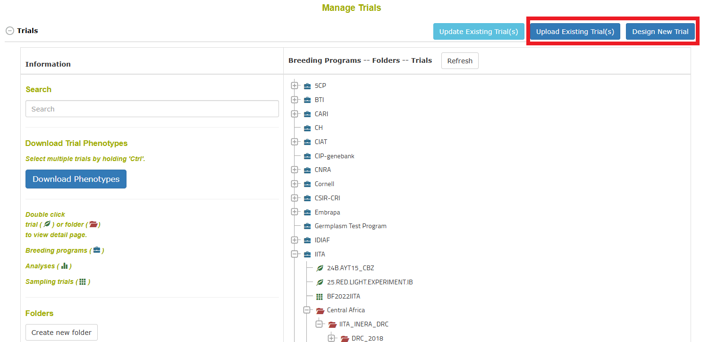
10.2.2 Adding a trial by using “Add Trial” form
Step 1. Begin the “Design new trial” workflow
Click on “Design New Trial” to begin.

The first step in this workflow is an introduction that looks like:
Here it gives information about what is required for a trial, including that to create a new trial, you need to create a list of the accessions that you would like to use in the trial. Lists can be viewed, created, and modified with the “lists” tool at the upper right of the screen. For more information on lists, click here.
Step 2. Enter “Trial Information”
On this screen you need to enter basic information about the trial, such as breeding program and location(s). You must also select a design type, such as Complete Block Design. The design is important because it influences how your genotypes are distributed and randomized over the trial. You must first click validate before proceeding to the next step.
Step 3. Enter “Design Information”
On this screen you need to specify a list of accessions to use in the experiment. This list must be a valid list of accessions. You must also specify all required design information, such as number of blocks in this case.
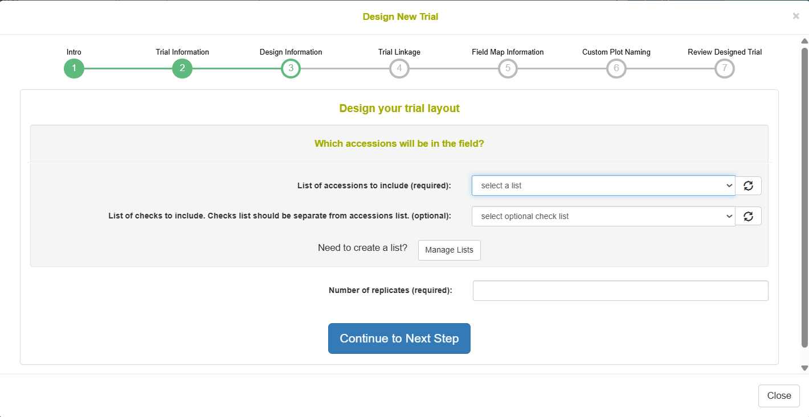
Step 4. Enter “Field Map Information” (Optional)
On this screen you can specify how the row and column numbers will be generated for the plots in the trial. The row and column number represent a relative position of the plot in the field. If you are not exactly sure of how you will plant the plots in the field or you have an irregular (non-rectangular) layout, you can skip this step for now. This information can be added on the Trial Detail Page once the trial is saved in the database in order to reflect exactly how the plots were planted in the field.
Step 5. Custom Plot Naming (Optional)
On this screen it is possible to change the format in which plot names will be generated for your trial. It is recommended to skip this step and just use the format generated by the database by default.
Step 6. Review Designed Trial
On this screen you can review the trial that the database has generated.
You will see a graphical representation of the trial. The numbers on the squares represent the plot_number of each plot and on mouse hover you can see further information about the plot.

You will also see a table representation of all the plots and their information. If you want to redo the randomization, you can click the “Redo Randomization” button.

At the bottom there is a brief summary of the trial followed by two buttons.

Step 7. Add Field Treatments to your design (Optional)
You can add Field Treatments by clicking “Add Field Treatment(s) to Design”. Clicking this opens a dialog to name your factor. You can name this to account for fertilizer or watering regime or inoculation or anything else. This is optional and can be added from the trial detail page afterwards.
Click “Continue” and a dialog will appear where you can specify plots for which the factor was applied. There is a select all button also.
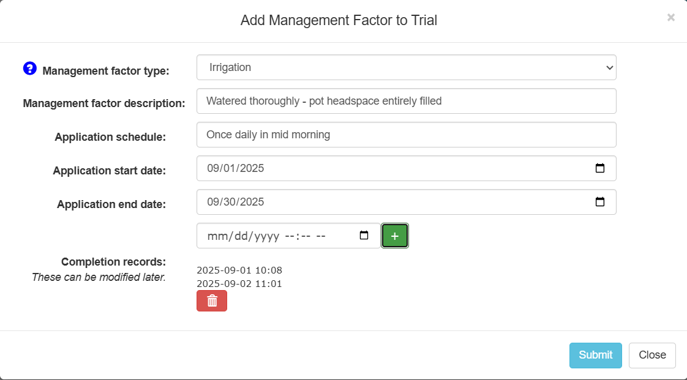

10.2.3 Adding a trial from an uploaded file
If you already have trial design layout in a spreadsheet, you can add your trial into the database by using “Upload Trial” form. To access “Upload Trial” form, click on “Upload Existing Trial(s)” button on the “Manage Trials” page.

When you click “Upload Existing Trial(s)” you will see the following workflow. Notice that there are 5 numbered sections to the workflow.
Step 1:
The first step is to understand what the format of the trial upload is. It is important to understand that the field layout represents plots in the experiment. Each plot has a globally unique plot_name, a sequential plot_number that is unique in the trial (but not globally unique. e.g. 101, 102, 103 for three separate plots), an accession_name representing what genotype is planted in that plot, and a block_number representing design replication. Each plot can be thought of as having a row_number and a column_number representing the relative position of the plot in a grid (e.g. the top left plot is row 1 column 1 following by row 1 column 2). Each plot can be planted with an amount of seed from a seedlot, where the seedlot_name represents the specific seed packet that was used, and num_seed_per_plot and weight_gram_seed_per_plot represent amount that were transferred from the seedlot_name to the plot_name. Treatments can be applied onto plots using additional column names in your file, where a 1 represents if the factor was applied to the plot and an empty cell means it was not applied.
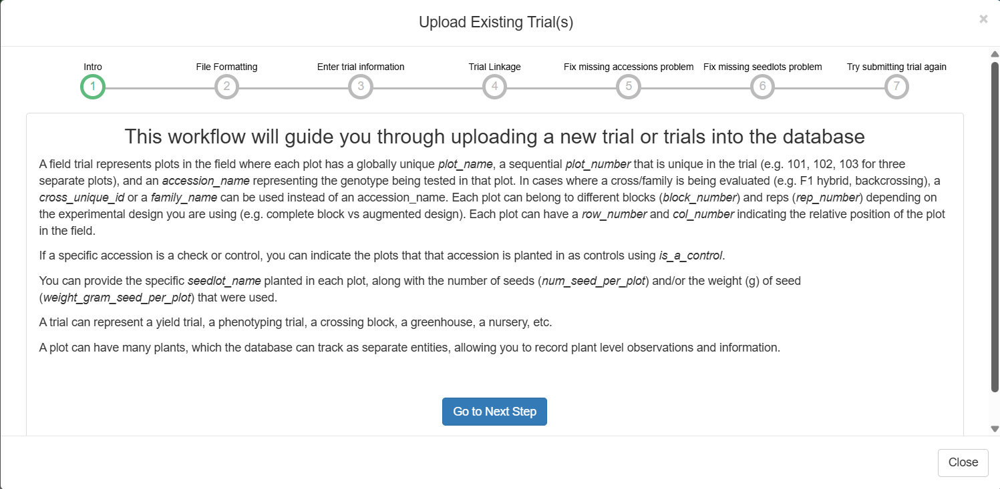
This information and more can be found by clicking “Information about file format”, which shows the following:
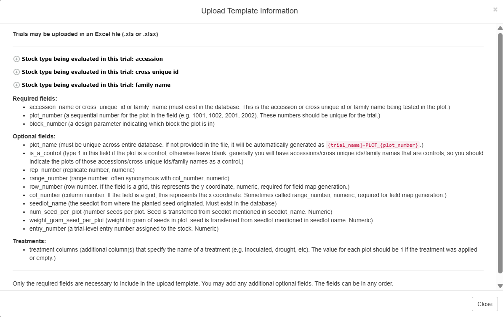
Minimum File requirements
All accession names in the file must exist in the database. See adding accessions for more information.
The uploaded file should be XLS or XLSX file format (NOT CSV).
The first row (header) must contain the column names: plot_name accession_name plot_number block_number is_a_control rep_number range_number row_number col_number seedlot_name num_seed_per_plot weight_gram_seed_per_plot
Minimal Example:
| plot_name | accession_name | plot_number | block_number | is_a_control | rep_number | range_number | row_number | col_number | seedlot_name | num_seed_per_plot | weight_gram_seed_per_plot |
|---|---|---|---|---|---|---|---|---|---|---|---|
| 2018plot1 | my_accession1 | 101 | 1 | 1 | |||||||
| 2018plot2 | my_accession2 | 201 | 2 | ||||||||
| 2018plot3 | my_accession2 | 102 | 1 | ||||||||
| 2018plot4 | my_accession1 | 202 | 2 | 1 |
File validation
- In case of errors in the uploaded file such as missing or invalid data, a window will appear listing the specific errors in the file that must be corrected before a successful upload.
Uploading a trial with Field Treatments
- You can upload a trial with field treatment(s) by adding additional column(s). The column header will be the factor e.g. fertilizer, watering regime, inoculation, etc. and the values in these columns will be either 1 or empty, indicating that the factor was applied to the plot or not.
Step 2:
Once you feel that your experiment field layout is in the right format, click on to the Next Step. You will see the following form which must be filled in completely:
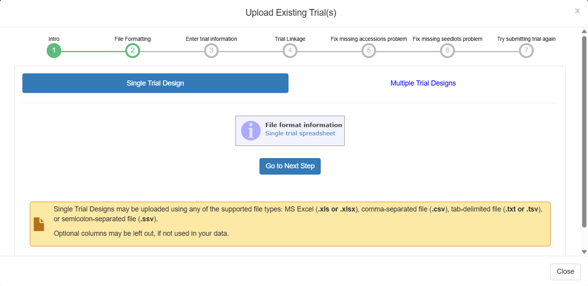
The trial name must be globally unique in the database. Please try to follow standard naming conventions for your group.
First you need to validate the form, and then you can click “Upload Trial”.
Step 3:
In the case where you have uploaded an experiment using accession_names that are not already present in the database, you will be taken to this screen. If the accession_names in your file are all already in the database, this step will be skipped. The reason it is necessary for your accessions to be in the database before you can add a trial using them is that a single accession can be used among many trials and therefore must exist as a separate entity in the database; because of this it is also very important to be careful about adding wrongly duplicated accession_names into the database. From this screen it is possible to make a new list with the missing accession_names and then click “Add Accessions to the database” to immediately resolve the issue. Once all your accessions are in the database, click to move to the Next Step.
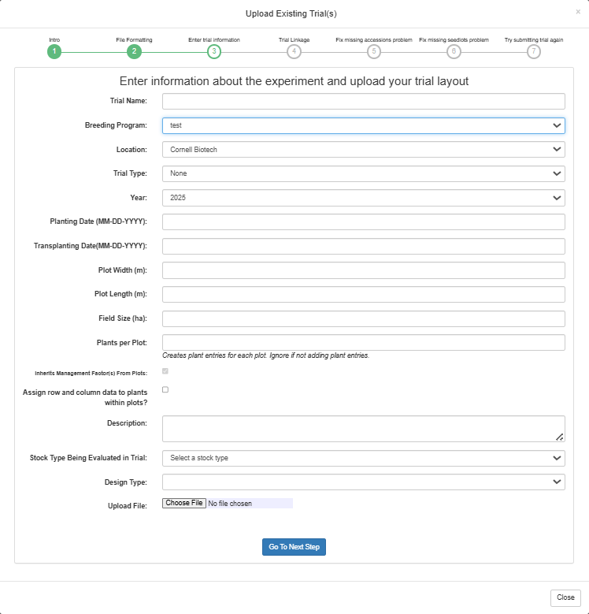
Step 4:
In the case where you have uploaded an experiment using seedlot_names that are not already present in the database, you will be taken to this screen. If the seedlots in your file are all already in teh database, this step will be skipped. The reason it is necessary for your seedlots to be in the database before you can add a trial using them is that a ginel seedlot can be used among many trials and therefore must exist as a separate entity in the database. From this screen it is possible to add the missing seedlots; you can either upload an XLS or XLSX file to add many at once or you can add them one by one. Once all your seedlots are in the database, click to move to the Next Step.
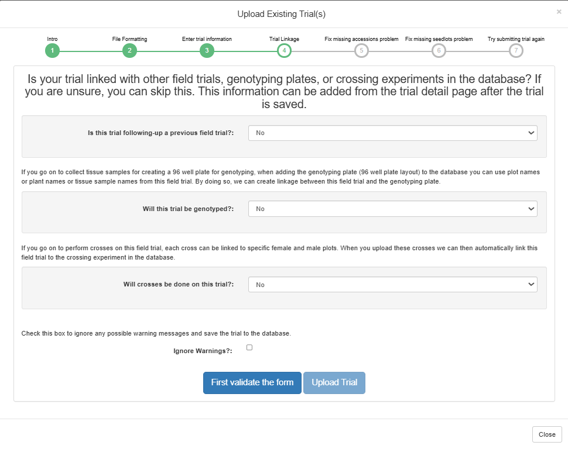
Step 5:
If there are any other errors with your file, such as if the plot_names are not globally unique in the database or your plot_numbers are not unique in your trial or row_number is not an integer or any other error, you will see the errors listed in the red box. It is up to you to correct these errors in your file. Simply open up the file you selected earlier in Excel and correct the issues and then save the file. Then you can click “Submit Trial” and it will resubmit it for you. You can continue to edit your file here and submit as many times as you need until it is accepted.
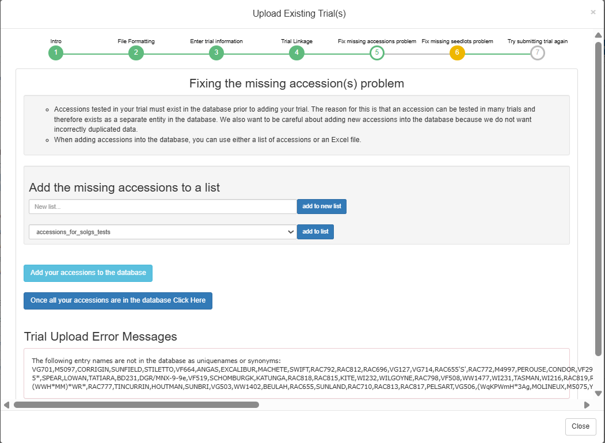

10.2.4 Multi-location trials
To add multi-location trials, simply select the multiple locations while using the ‘Add Trial’ form.
This will create a separate trial for each selected location, but they will share the same design and will be grouped in a single folder.
By default each trial design will have a fresh randomization, but if desired you may check the “Use same randomization for all locations” option.
10.2.5 Email alert for multiple trial design upload
When uploading multiple trials from a file, you have the option to receive email notifications by clicking the “Email Alert” checkbox. By default, the system will use the email address associated with your account, but you have the option to enter a different email address if you prefer. After submitting, the upload process runs in the background, allowing you to continue using the interface without interruptions. Once the process completes, you will receive an email with the upload results.

10.2.6 Viewing Plot Layout and Trait HeatMap
10.2.6.1 Viewing plot layout
In the “Field Layout Tools and Phenotype Heatmap” section of a Trial Detail page, the trial physical layout is displayed by default. The relative position of the plots will be displayed based on the row and column positions given to the plots during the trial creation or upload steps. The plots are color-coded based on the plot’s rep and block numbers and whether or not it is used as a check. Hover the mouse over the plot to see details about a specific plot.
If there is more than one trial grown in the same physical field, the trial layouts of all of the trials can be shown together if the trials share these properties:
- Each trial has the same year
- Each trial has the same location
- The location type of the trials’ location is set to Field
- The row and column positions of all of the plots (across the related trials) don’t overlap. For example, trial #1 starts at row 1 and trial #2 starts at row 10.
When these conditions are met and you check the “Select Trials in Same Field” checkbox, the plots from all of the related trials will be displayed on the same field layout. The plots will be color-coded by trial. The planting order and harvest order downloads will include the plots from all of the displayed trials in the order in which the plots occur in the field.
Tracking plot images on fieldMap
Plot images can be seen on fieldMap if a plot is associated to any image.

To view plot image(s), click on a plot, a dialog will appear.
On the appeared dialog, click on View plot images. To see more images if a plot has more that 2 images, click on See more images… Medium size of an image can be viewed by clicking on an image.


10.2.7 Adding additional information in the “Trial Detail” page
After you added a new trial to the database, you can edit trial details or add more information for that trial through the“Trial Detail” page.
Uploading Physical Trial Layout
You can upload physical trial layout by clicking on the “Upload trial coordinates” button on the “Trial Detail” page.
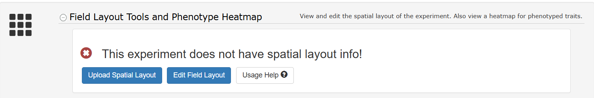
Please check file format carefully. You can find file format information by clicking on the “Spreadsheet format” on the “Upload trial coordinates” window.

Spreadsheet format:

Physical Trial Layout File requirements
All plot names in the file must exist in the database.
The uploaded file should be tab delimited (txt).
The first row (header) must contain the column names
Example:
| plot_name | row_number | col_number |
|---|---|---|
| plot1 | 1 | 1 |
| plot2 | 1 | 2 |
| plot3 | 1 | 3 |
Select the trial layout coordinates file that you want to upload for this trial, then click “OK” button to upload the file.

The following message is displayed after the coordinates are uploaded.

The field layout can be viewed by clicking on the “Trial Heatmap Section” to see a drop-down of the field map.

Downloading Field Map Spreadsheet
Field map spreadsheet can be downloaded if the trial has field coordinate (row and column numbers) uploaded for it plots. To download, click on the Download FieldMap Layout link on the Trial Heatmap section.
A dialog will appear, click on the submit button to download.

Click to view downloaded spreadsheet.

Editing Physical Trial Layout
“Usage Help” link contains information on how to edit physical trial layout.


There are three different options for editing trial layout:
Replacing plot accession by clicking on the plot in the layout.
Replacing trial accession by using “Edit Field Map” link.
Substituting plot accessions by using “Edit Field Map” link.
When you move a cursor over a plot on the trial layout, information for that plot appears.

To edit a specific plot, clicking on that plot. Entering new accession on the “Replace Plot Accession” form, then clicking on “Replace Plot Accession” button.

To replace an accession (in every plot/plant of that accession), clicking on “Edit Field Map” button.
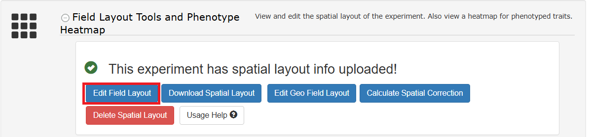
On the “Edit Field Map” window, clicking on “Replace Accession” button.
Selecting any accession that you want to replace and entering your new accession, then clicking “Replace Trial Accession” button.
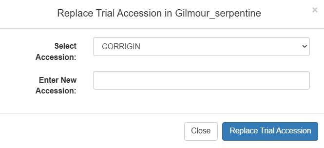
You can switch plot accessions between any two plots by clicking on “Substitute Accession” button.

On the “Substitute Plot Accession” form, selecting the two plots that you want to switch, then clicking on the “Substitute Plot Accession” button.

10.2.8 Downloading the Trial Layout from the “Trial Detail” page
Click on “Download Layout” on the Trial Detail page.
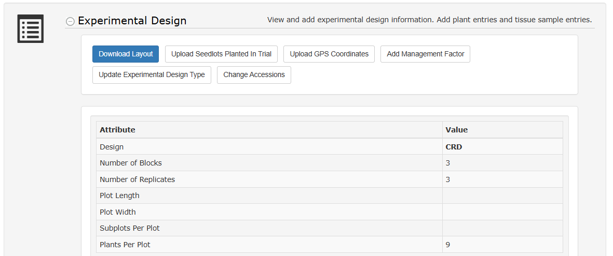
The trial layout includes all information regarding the observation units in the experiment. The observation units can be plots, plants, or subplots. The trial layout can include trial design information such as the block_number and rep_number. It can also include physical map information such as the row_number and col_number, if that information is available for the trial. The trial layout also includes information regarding treatments that have been applied in the field. Optionally, the layout can give information regarding accession’s global performance for a list of traits.

10.2.9 Adding Plant Entries To Your Trial
After you added a new trial to the database you can choose to add plant entries to your trial. Adding plant entries enables plant level phenotyping. It is generally better to enter data at the plant level into the database because it is always possible to calculate plot level phenotypes from the individual plant data.
Plant entries can be added to your trial in two ways: 1) Automatically generated by the database. The only input required is the number of plants per plot. 2) Uploaded in an XLS or XLSX file. This allows you to specifically name your plant entries.
These two options are available in the “Plant Entries” section on the Trial Detail Page, as shown in the screen shot below.
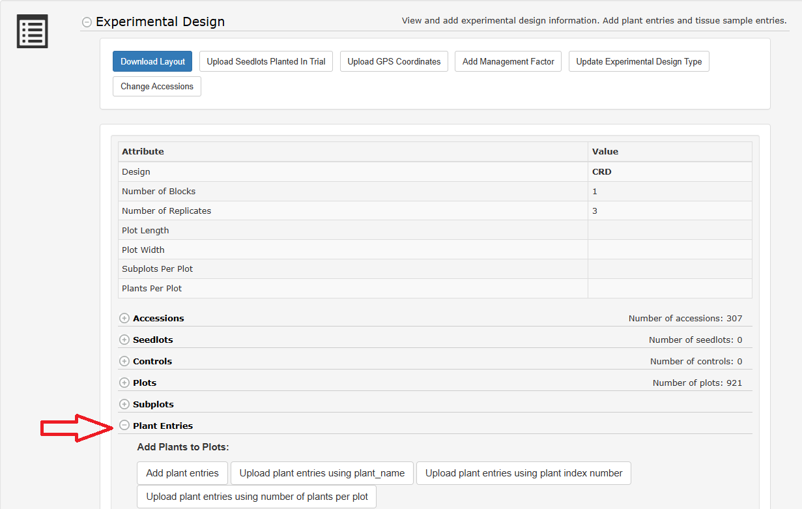
Automatically Generate Plant Entries
Clicking on “Add plant entries” opens the following dialog box. The only input required is the number of plants per plot. This will create plant entries that are named as a concatenation of the plot_name and the plant’s index number e.g. plot_name_plant_1
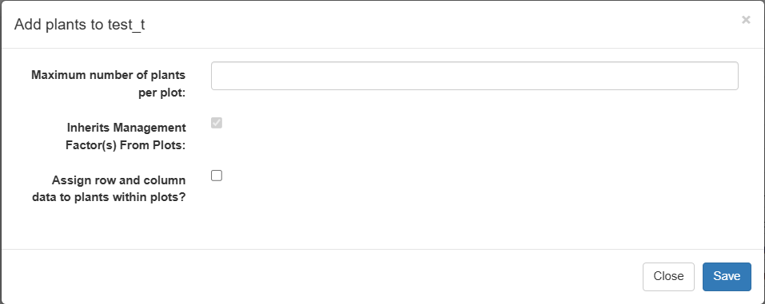
Upload Plant Entries
Alternatively, you can choose to upload an XLS or XLSX file that contains the names of the plant entries. Clicking on “Upload plant entries” opens the following dialog box.

Clicking on “Spreadsheet format” will give you information about the XLS or XLSX file to upload. Clicking this will open the following dialog box.

This shows you that the files requires the header to contain “plot_name” and “plant_name”. The plot_name must exist in the database already and the plant_name must be unique in the database.
Along with the file, you must specify “number of plants per plot”. This is intended to be the total number of plants that were plants. If the file you upload shows three plants in one plot and four plants in another plot, that is fine.
10.2.10 Adding Tissue Sample Entries To Your Trial
Some trials require tissue samples to be collected from plants in a field trial. The database will generate these tissue sample identifiers for you and will maintain all relationships with the plant, plot, accession, etc. To begin, go to the Design section of a trial’s detail page and open the “tissue sample entries” section. Please note that tissue samples are directly related to plants, therefore your trial requires plants before you can add tissue samples.

When you click on “Add tissue sample entries” you will see a dialog where you specify the number of tissue samples you require per plant. Once you have specified how many tissues samples, you can give specific words to distinguish samples, such as “root” or “stem”, as seen below.

Once you have added tissue sample entries they will appear in the design section of the trial as seen below.

Each tissue sample has a detail page where you can add information about the sample, such as if it is in transit or in storage somewhere.

The related stocks section near the bottom of this detail page displays the relationships between all stocks, including tissue samples.

10.2.11 Uploading GPS Coordinates For Plots
You can upload GPS coordinates for the plots in your trial. There is a link on the Trial Detail Page as shown below.

Clicking on this link will bring up the following dialog.

Here you can upload an XLS or XLSX file. To see information on the format of the file that should be uploaded, click on “Spreadsheet format”. This will bring up the following dialog.

This dialog tells you that the file must be XLS or XLSX and must contain: plot_name WGS84_bottom_left_x WGS84_bottom_left_y WGS84_bottom_right_x WGS84_bottom_right_y WGS84_top_right_x WGS84_top_right_y WGS84_top_left_x WGS84_top_left_y The GPS coordinates should be WGS84 format and specify a four-pointed polygon around the plot.
10.2.12 Uploading Additional Files To Trial
It may be of interest to you to upload additional documents, images, or recordings to your trial. To do this, scroll down to the “Uploaded Additional File” section on the trial detail page. From here you can view and download any of these additional files.

To upload an additional file, click on the “Upload Additional Files” link. A dialog will appear where you simply select your desired file. For information, you can click “Upload information” to see the following message.

10.3 Updating Trial Data
To updated the trial-level metadata (such as the planting date, design type, description, etc) of one or more existing trials, click the “Update Existing Trial(s)” button from the Manage > Field Trials page. This upload can also be used to rename trials or move trials to a different breeding program. In order to update a trial, you must be a curator or a submitter (that is associated with the breeding program of the trials).
Here you can upload a file that contains the new metadata for the existing trials in the database. The first column is labeled ‘trial_name’ and includes the name of the existing trial. Additional columns can be included for the metadata you want to update. Any columns not included in the file or values left blank will leave the existing metadata unchanged. The columns that can be included are:
- new_trial_name: A new name for the trial, must not already exist in the database
- breeding_program: The name of breeding program that managed the trial, must exist in the database.
- location: The name or abbreviation of the location where the trial was held, must exist in the database.
- year: The year the trial was held.
- transplanting_date: The transplanting_date of the trial was conducted. Date in YYYY-MM-DD format or ‘remove’ to remove the date
- planting_date: Date of Planting in YYYY-MM-DD format or ‘remove’ to remove the date
- harvest_date: Date of Harvest in YYYY-MM-DD format or ‘remove’ to remove the date
- design_type: The shorthand for the design type, must exist in the database. Possible values include CRD: Completely Randomized Design, RCBD: Randomized Complete Block Design, RRC: Resolvable Row-Column, DRRC: Doubly-Resolvable Row-Column, ARC: Augmented Row-Column, Alpha: Alpha Lattice Design, Lattice: Lattice Design, Augmented: Augmented Design, MAD: Modified Augmented Design, greenhouse: undesigned Nursery/Greenhouse, splitplot: Split Plot, p-rep: Partially Replicated, Westcott: Westcott Design
- description: Additional text with any other relevant information about the trial.
- trial_type: The name of the trial type, must exist in the database. Possible values include Seedling Nursery, phenotyping_trial, Advanced Yield Trial, Preliminary Yield Trial, Uniform Yield Trial, Variety Release Trial, Clonal Evaluation, genetic_gain_trial, storage_trial, heterosis_trial, health_status_trial, grafting_trial, Screen House, Seed Multiplication, crossing_block_trial, Specialty Trial
- plot_width: plot width in meters
- plot_length: plot length in meters
- field_size: field size in hectares
10.4 Deleting Trial Data
To delete a trial data, click on the “Delete trial data” section. There are links to delete traits, layout and trial entry data.

To delete assayed trait data, click on “Delete trait data” link. On the appeared dialog, confirm deletion by clicking on the “Select Traits For Deletion” button, then select one or more traits to delete from the trial.


To delete trial layout data, click on the “Delete layout data” link. Confirm deletion on the appeared dialog.
To Delete trial entry, click on “Delete trial entry” link. Confirm deletion on the appeared dialog.